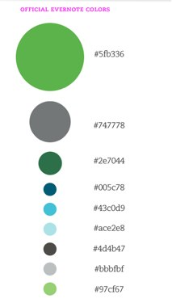
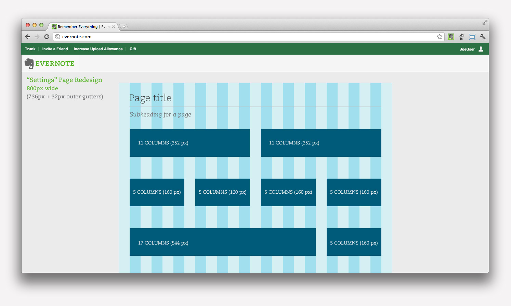

Less CSS

Why Bother?
Short answer: CSS sucks
CSS is widely considered the weakest point in the web technology stack. It's a copy-paste language with very little room for maintainability or reusability.
But can't you just neatly override things?
No, because often times, you end up needing to override the majority of the class. Lets look at Evernote's standardized buttons. They look like this:
These buttons have a ton of attributes set, including many CSS3 properties that require vendor prefixes, since they're not fully standardized. Lets take a look.
Evernote Button CSS 1/4
.general-button {
display: inline-block;
zoom: 1;
min-width: 100px;
margin: 0px;
padding: 8px 12px;
border: 1px solid #B2B2B2;
height: auto;
background: whiteSmoke;
float: none;
background-color: #EFEFEF;
background-image: -moz-linear-gradient(top, whiteSmoke, #E6E6E6);
Evernote Button CSS 2/4
background-image: -ms-linear-gradient(top, whiteSmoke, #E6E6E6); background-image: -webkit-gradient(linear, 0 0, 0 100%, from(whiteSmoke), to(#E6E6E6)); background-image: -webkit-linear-gradient(top, whiteSmoke, #E6E6E6); background-image: -o-linear-gradient(top, whiteSmoke, #E6E6E6); background-image: linear-gradient(top, whiteSmoke, #E6E6E6); background-repeat: repeat-x; filter: progid:DXImageTransform.Microsoft.gradient(startColorstr='#f5f5f5', endColorstr='#e6e6e6', GradientType=0); color: #747474; line-height: 18px; font-family: helvetica, arial, sans-serif; font-size: 13px;
Evernote Button CSS 3/4
font-style: normal; font-variant: normal; font-weight: normal; text-align: left; text-decoration: none; text-indent: 0; text-justify: auto; text-outline: none; text-overflow: clip; text-shadow: none; text-transform: none; text-wrap: normal; color: #3B3B3B; text-align: center; -webkit-border-radius: 2px;
Evernote Button CSS 4/4
-moz-border-radius: 2px; border-radius: 2px; -webkit-box-shadow: 0px 0px 0px #000000; -moz-box-shadow: 0px 0px 0px #000000; box-shadow: 0px 0px 0px #000000; -webkit-transition: all 0.2s ease 0; -moz-transition: all 0.2s ease 0; -ms-transition: all 0.2s ease 0; -o-transition: all 0.2s ease 0; transition: all 0.2s ease 0; -webkit-touch-callout: none; -webkit-user-select: none; -khtml-user-select: none; -moz-user-select: none; -ms-user-select: none; user-select: none; }
And then there's also hover states, potential active states, etc.
Now, The Green Button
What would have to change in order to have a green button instead of the gray one? This would seem like a nice use case for overrides, but it turns out to be impractical.
Overrides to save the day?
Lets go back to the previous slides and take a look at what font, color, and vendor prefixed settings we'd have to change by hand in our override. Boop beep
Other Problems: No Variables
We have this nice set of standardized colors, both company-wide, and specific to the web project. But if you want to use the colors in CSS, you have to have a plain text file open with the list of hex codes and try to remember which one is which. Then you have to copy-paste them throughout your code.
And if the design team decides that #ACE2E8 should really be #ACE3C7, you have to go through every file in the codebase and run a substitution.
Other Problems: Responsive Design
Evernote's "web client" pages aren't split into separate versions for mobile browsers. They adapt to different screen resolutions. This is due to a modern CSS tool -- Media Queries.
Media Queries
Let you define custom styles based on page width.
Aside from the obvious problem that Media Queries suffer from the same lack of variables as everything else, they also are annoying to work with, since they in effect duplicate large parts of your code throughout the page. Ex.
.foo {
width: 10px;
}
/* later down the page */
@media only screen and (min-width: 479px) and (max-width: 650px) {
.foo {
width: 30px;
}
}
Less CSS in a Nutshell: Overview
Less is a compiler written in JavaScript that produces excellent CSS. Don't worry, it can run server side pretty easily through Rhino on top of Java. It also has a simple command line tool.
Less is backwards compatible with CSS, so it's easy to learn. It just adds a few useful things, without imposing a standard library:
- Variables
- Mixins, with parameters (i.e. reusable chunks of CSS)
- Nesting of style rules (explained more soon)
- Mathematical operators
- Easy server-side importing of other Less files
- Namespaces and scope
Less CSS in a Nutshell: Variables, Mixins
@standard-width: 150px;
@en-dark-green: #2E7044;
.bordered(@width: @standard-width) {
border: 2px solid @en-dark-green;
padding: 8px;
margin-bottom: 4px;
width: @width;
}
.ex-standout {
.bordered();
font-size: 11px;
}
.ex-standout-wider {
.bordered(300px);
font-size: 11px;
}
Less CSS in a Nutshell: Nesting, Math
@standard-width: 150px;
@en-dark-green: #2E7044;
.bordered(@width: @standard-width) {
border: 2px solid @en-dark-green;
padding: 8px;
margin-bottom: 4px;
width: @width;
}
.ex-new {
background-color: @cool-gray;
.ex-standout {
width: @standard-width / 3;
}
}
So, What Do We Do With All This?
- Get CSS compression for free.
- Break the CSS source into logical files.
- Make writing CSS3 vendor-prefixed things easy.
- Standardize colors, widths, and media queries using variables
- Provide standardized widgets, that are easily repurposable
- Standardize browser workarounds
- Make layouts firmer by providing a grid layout
Breaking Files Up
encss ├── base-import.less ├── button.less ├── dialog.less ├── extra │ └── settings │ ├── panel.less │ ├── settings-import.less │ ├── settings-widget.less │ └── tab.less ├── footer.less ├── gmail-connect.less ├── grid.less ├── helpicon.less ├── input.less ├── misc-classes.less ├── utility.less ├── variable.less └── wrapper.less header.less layout.less
Making CSS3 Features Easy and Standardizing Hacks
Complex gradient CSS made easy
#gradient > .radial(@cool-gray, @boring-gray);
IE7 compatible inline-block
.inline-block();
Sample of what these fuctions do
.unselectable() {
-webkit-touch-callout: none;
-webkit-user-select: none;
-khtml-user-select: none;
-moz-user-select: none;
-ms-user-select: none;
user-select: none;
}
Grid Layout
{kind=link}
Throughout the source, there'll be lines like these, that ensure that the page is laid out correctly
width: @column-width * 5;
For example, we can examine the friend referral page
Making Media Queries Palatable
.wrapper#container {
background-color: @white;
border: 1px solid @boring-gray;
margin: @column-width auto 0;
padding: @column-width;
width: @column-width * 23;
position: relative;
@media @phone-portrait {
width: @column-width * 9;
padding: @column-width / 2;
}
@media @phone-landscape {
width: @column-width * 11;
}
@media @tablet-portrait {
width: @column-width * 20;
}
}